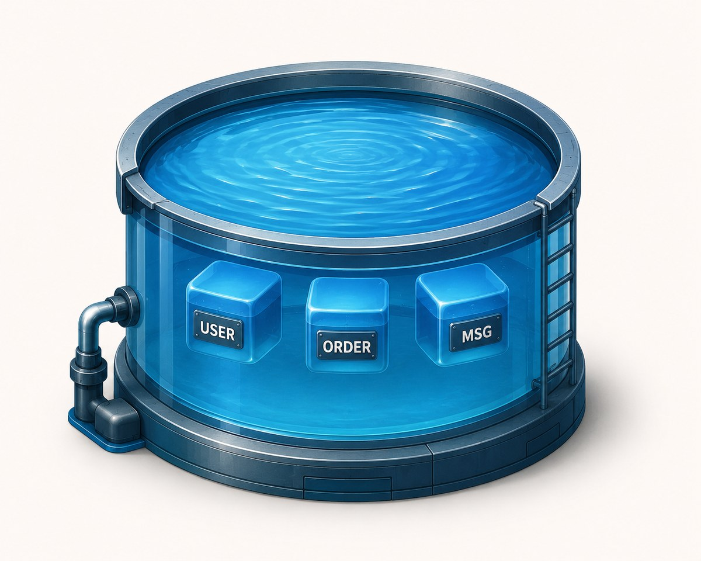
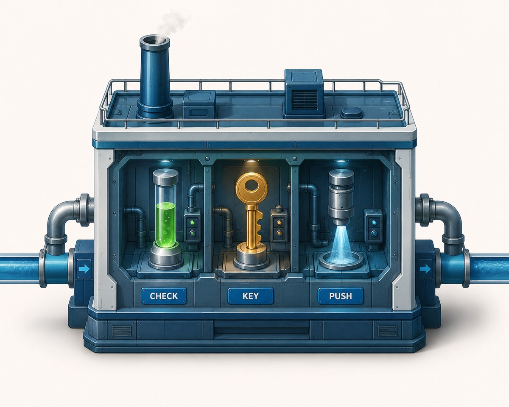
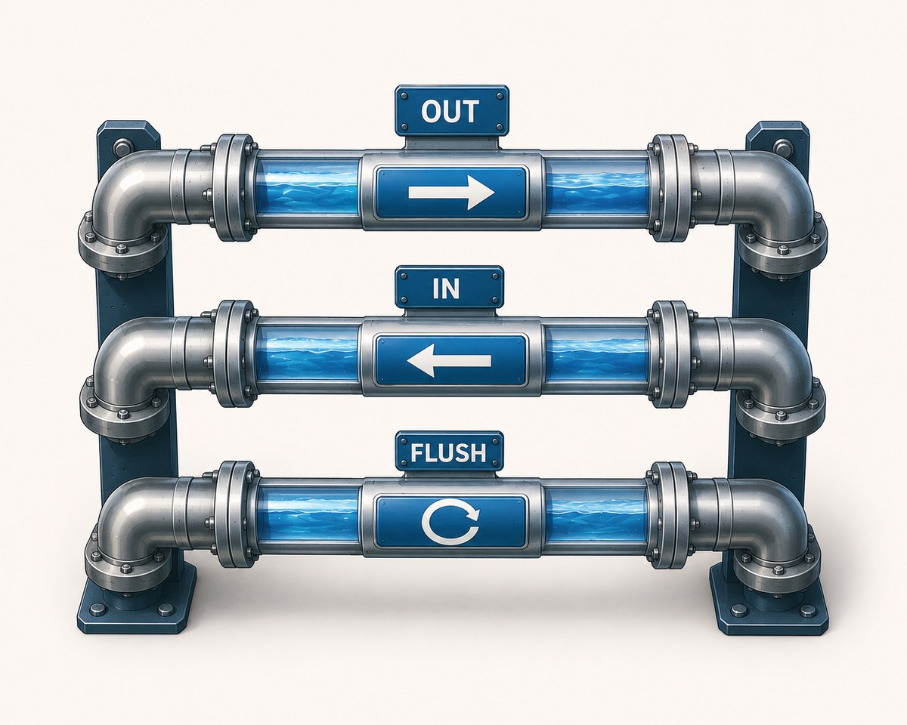
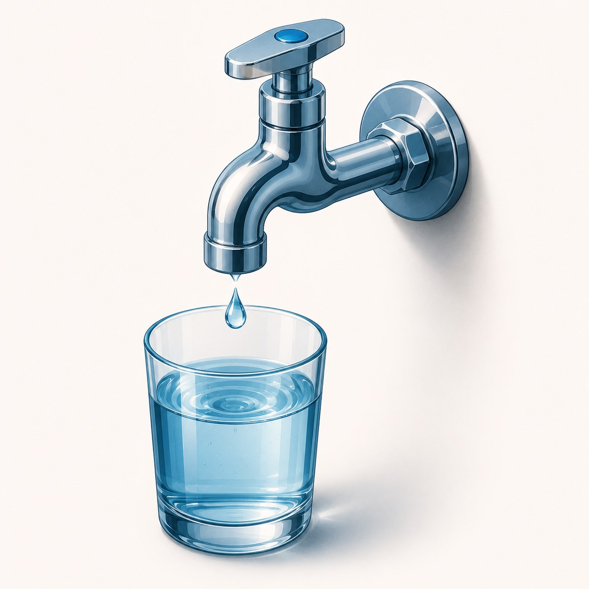
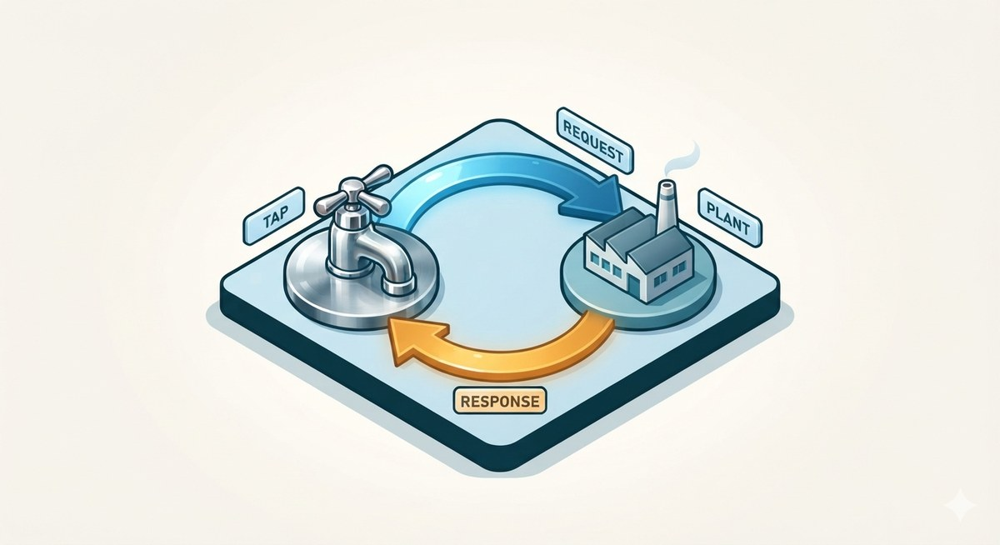
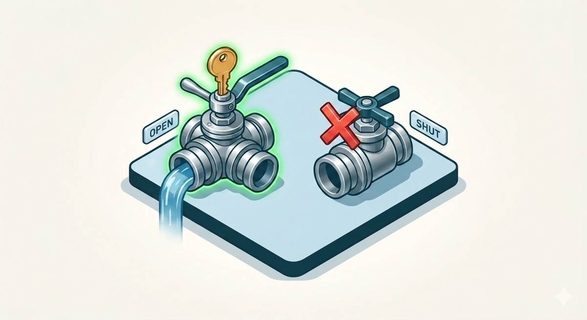
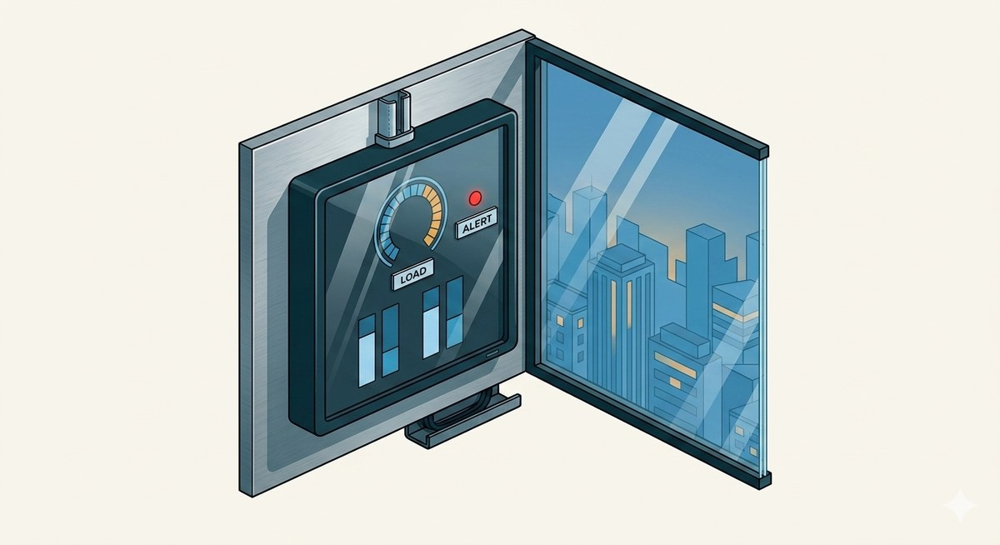
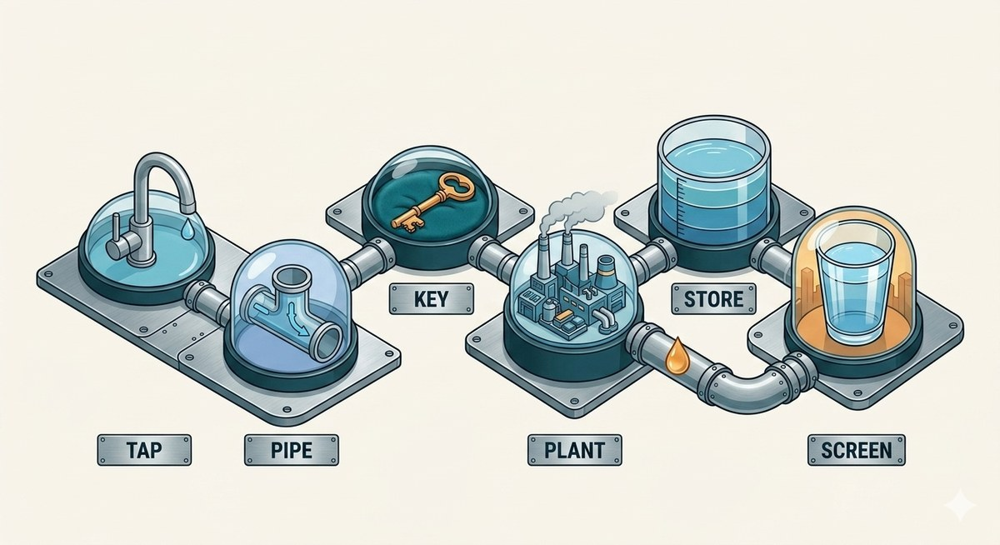
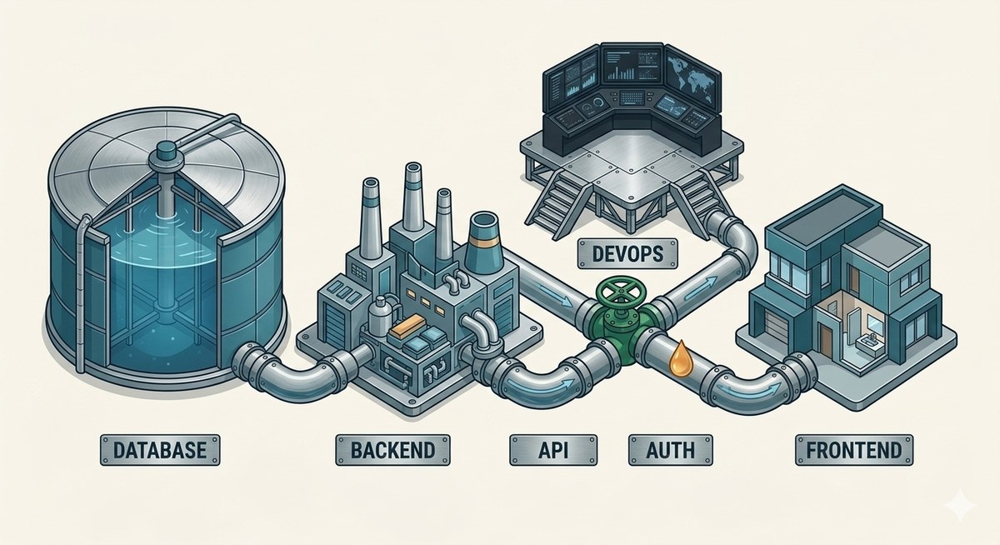

Every website you use is a city. You only ever see the tap in your kitchen — but behind it sits a reservoir, a treatment plant, miles of pipes, pressure valves, and a control room deciding who gets water and when.
Full-stack development is just building that whole city. Let's follow the water from source to tap.

🏔️ The Reservoirthe city's memory
A giant, quiet lake above the city. It has one job: hold the water.
What it does NOT do
- ✕ Doesn't clean the water
- ✕ Doesn't decide who gets it
- ✕ Doesn't send it anywhere
What it DOES
- ✓ Holds everything, safely, in bulk
- ✓ Waits — patient, always ready
- ✓ Keeps the whole supply in one trusted place
The rule of the city: water never leaves here raw. Every drop must pass through the plant first.

🏭 The Treatment Plantthe city's brain
Every drop stops here before it reaches a home. This is where the city thinks.
- 🧠Pulls water up from the reservoir
- 🧪Checks it's clean and correct
- 🔑Decides who's allowed to receive it
- 💨Pushes it out under the right pressure
Every real decision the city makes happens here. The tap is not clever — the plant is.

🚰 The Pipesthe city's roads
A plant that can't move water is useless. So the city lays pipes — and each pipe has one fixed, agreed job.
- ➡️One pipe carries water out to homes
- ⬅️One brings fresh water in
- 🔄One flushes a tank and refills it
Turn a known valve → a known thing happens. Every single time. That predictability is why the whole city runs.

🚿 The Tapthe only part you touch
The one piece of this entire city a person ever actually touches.
What it IS
- ✓ Simple to turn
- ✓ Honest about what you'll get
- ✓ Nice to have in the room
What it is NOT
- ✕ Holds no water of its own
- ✕ Makes no decisions
- ✕ Does nothing on a dead pipe
A beautiful tap on a dead pipe is just decoration.

🔁 Water Doesn't Flow Until You Ask
The secret that makes it all click: water never flows on its own. You have to ask.
- You turn the tap — a quiet message leaves for the plant
- It travels the pipe — "send water here, now"
- The plant checks and approves it
- Water flows back up to your glass
Ask → travel → approve → return. This loop runs every time anything appears on a screen.

🔒 Not everyone gets water
The plant doesn't open for just anyone. Valves only turn for verified homes.
- 🔑Right key → valve opens → water flows
- 🚫Wrong key or no key → valve stays shut
No water, no argument.

🎛️ The Control Roomrunning a whole city
One house is easy. Now picture the whole city turning taps at 8am — everyone showering at once.
- 📈Too much demand? → build more plants, split the load
- 🚨A pipe bursts at 2am? → alarms ring, someone fixes it fast
- 🔧A plant needs upgrading? → reroute first, so no home goes dry
- 📦Same plant in any city? → build it as a sealed, standard unit
The leap from plumbing one house to running a living city. Same water — much bigger responsibility.

💧 Follow One Dropthe full journey
You open an app, and it shows your profile. Watch one drop travel:
- You turn the tap — you tap "My Profile"
- The message travels the pipe — your request heads for the plant
- The valve checks your key — you're verified
- The plant pulls from the reservoir — it fetches your details
- Water flows back — your data returns up the pipe
- Your glass fills — your name appears on the screen

🗺️ The One-Line Mapnow, the real names
The whole city one more time — with the actual tech name for each part. Keep this next to you and full-stack stops being scary:
